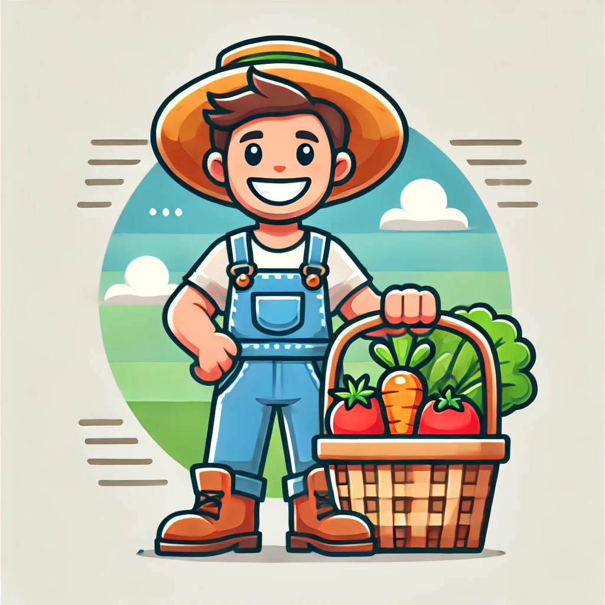

Bienvenido a EcoAgro
Conecta directamente con los productores del campo.
¿Qué es EcoAgro?
EcoAgro conecta a los agricultores con los compradores directamente. Accede a productos frescos, apoya a la economía local y construye un mundo más sostenible. ¡Únete hoy!